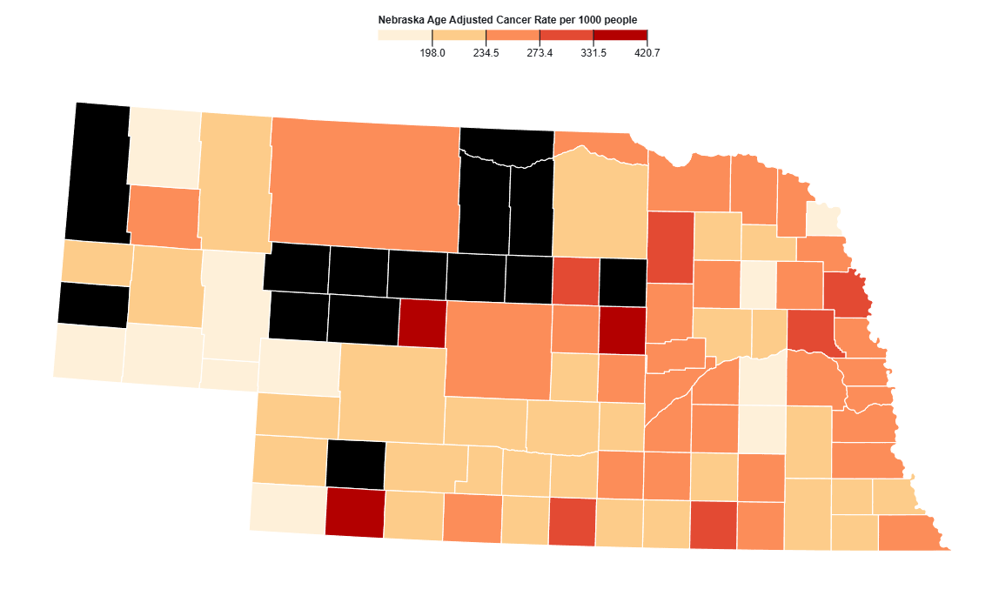
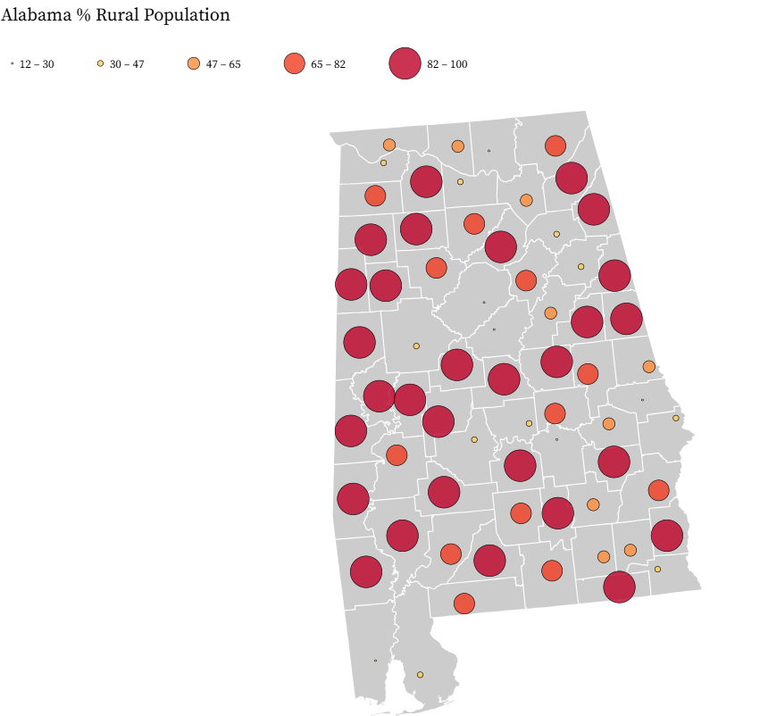
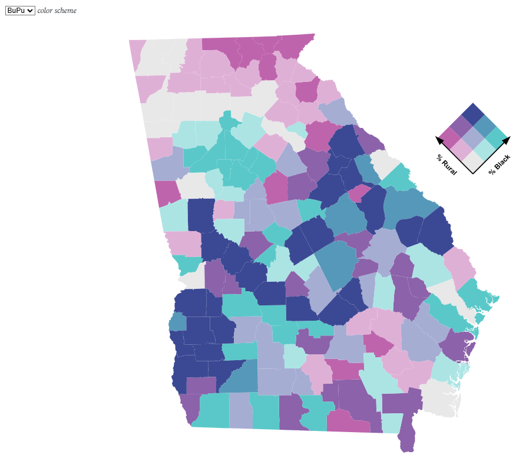
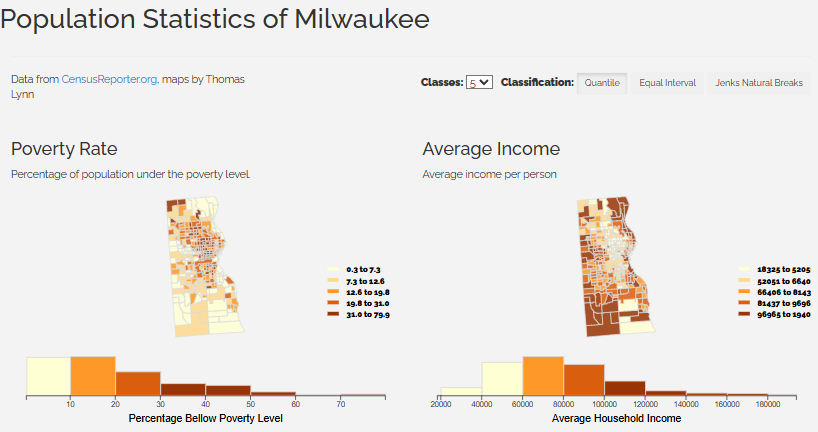
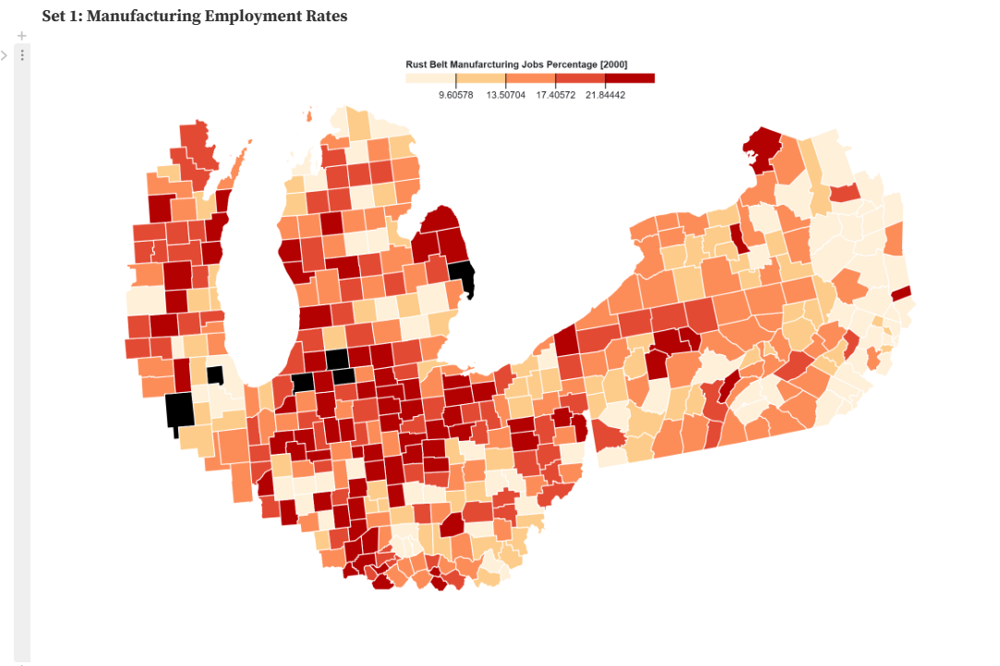

Geographic Visualization Mapping Projects Spring 2026

Nebraska Cancer Rates
Choropleth map showing Nebraska raw cancer rates, mapped using an observable notebook in javascript. The goal of this assignment was to identify areas of higher cancer rates. This was the first Observable project I did, so it is a good start to see how my work has evolved over time.

Graduated Symbol Alabama Rural Population
Graduated Symbol map showing the percentage of rural population in different counties of Alabama, done in observable using java script. Data was collected using NHGIS census data

China Internal Migration flow map
This flow map was created using flowmapper.org The map has an underlaying choropleth map, graduated symbols and flow arrows to show the movement of people in different providences of China. Data was supplied through SEES:3040 Geographic Visualization

Michigan Population bivariate map
This map is a Bivariate map of black population and Rural population of different counties of Michigan. It has different color schemes allowing users to select how they want to view the map. The data was gathered from NHGIS census data

Comparison Between Milwaukee Population Statistics
Using population statistics from Census Reporter, I created 4 maps and histograms of the Milwaukee area. These collection of maps allows you to see the cause and effect of different population statistics, such as Poverty, Education, Income, and Nationality.

Rust Belt Manufactoring
This was a collection of maps created with my classmate Mathew Schmalz. We wanted to examine how industry change in the historic "Rust Belt" has effected local populations over time. We looked into the poverty rates and manufacturing jobs between 2000 and 2010.